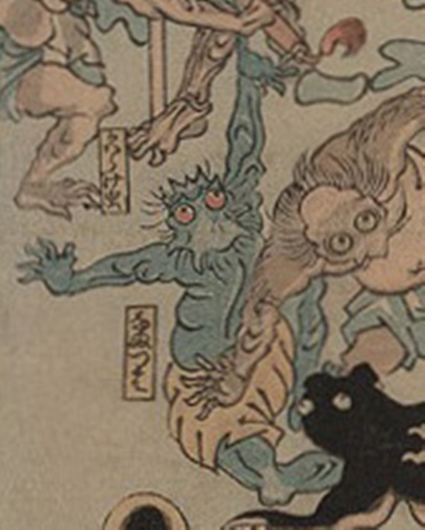

病気；ビョウキ，疫神；エキシン，生唾；ナマツバ

生唾が擬人化した化物。青い肌で両目は赤く、口元は割れて尖っており、頭部には角のようなものが生えている。
著作者：歌川芳虎／出典：親書誌：U426_nichibunken_0012：諸病諸薬の戦い；ショビョウショヤクノタタカイ／日付：2006／資源識別子：U426_nichibunken_0012_0021_0000
Copyright (c)2010- International Research Center for Japanese Studies, Kyoto, Japan. All rights reserved.